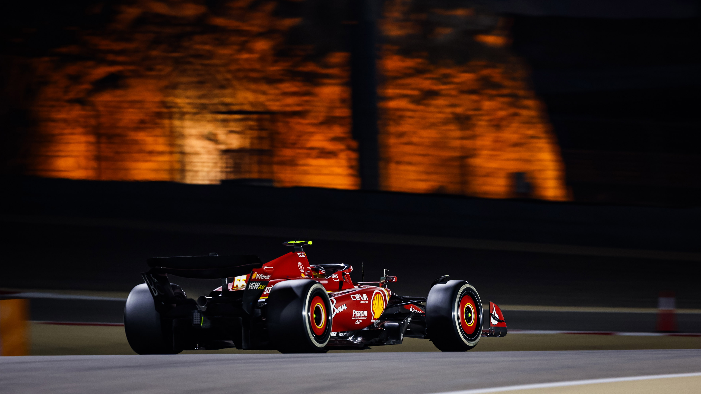
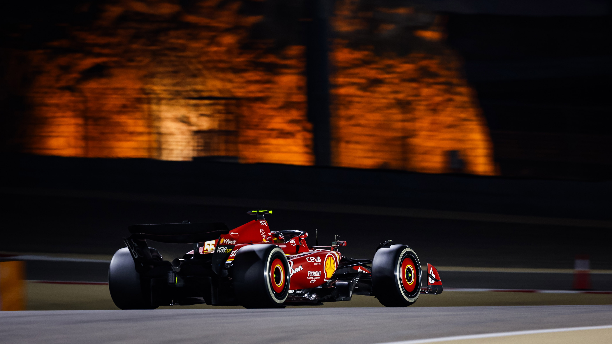

What is F1?
- As the highest class of international racing for single-seater formula racing cars, Formula 1 is the pinnacle of motorsport and the world’s most prestigious motor racing competition. There really is nothing like it. It’s a team sport (it needs to be to change all 4 tyres on a car in under 2 seconds!), but the drivers are more like fighter pilots than sportspeople. Battling extreme g-forces, making daring decisions in the blink of an eye – and at 370km/h. To be the best, F1 drivers push themselves – and their incredibly innovative machines – to the very limit.
- A total of 20 drivers and 10 teams makes up the current Formula 1 grid, with each squad fielding two cars.
- Why is it called Formula 1 or F1? First up, the ‘Formula’ is a set of rules – covering car design, engine size, component usage and much, much more – that all competitors must abide by. Secondly, the ‘1’ simply denotes that it is the premier formula.
F1 HISTORY
- Formula 1 was formed as a world championship competition back in 1950, with the first-ever race held at the Silverstone Circuit – a former Royal Air Force station – in the United Kingdom on May 13 of that year.
Six more events were staged in a season which saw Alfa Romeo driver Giuseppe ‘Nino’ Farina become the sport’s first world champion – edging out team mates Juan Manuel Fangio and Luigi Fagioli.
While motorsport had been taking place since the late-1800s, with Grand Prix events growing in popularity across the following decades, 1950 marked the start of the official F1 championship that remains to this day.
HOW DOES A F1 CAR WORK?
- Thousands of parts are involved in creating some of the fastest and most advanced racing cars on the planet – spanning detailed bodywork, suspension elements, turbo-hybrid power units, eight-speed paddle shift gearboxes, 18-inch tyres and much, much more.
When the engine powers it forward, an F1 car essentially acts as an aeroplane flipped upside down, with front and rear wings – and everything in between – pushing the car down onto the track and giving it incredible levels of grip through corners.
That said, F1’s current technical regulations are based around a ‘ground effect’ aerodynamic concept, with several carefully designed tunnels underneath the car’s floor sucking the car to the track surface to generate even more downforce.
This, combined with simpler bodywork than previous years, means less ‘dirty air’ – or disrupted airflow – is created and allows cars to follow each other more closely, opening up additional overtaking opportunities and adding to the on-track spectacle.
WHERE DOES F1 RACE?
A total of 24 races in 21 countries across five continents are included on the Formula 1 calendar. Classic tracks such as Silverstone, Spa-Francorchamps and Suzuka, combined with more recent additions including Las Vegas, Miami and Saudi Arabia give an exciting and varied selection of circuits that offers plenty to look forward to.
Monaco, Monza, Silverstone and Spa are circuits that still feature on the F1 calendar from the very first season in 1950, although plenty of safety-based changes and track layout modifications have been made since then.
Formula 1’s inaugural season featured seven rounds, spread out from May to September, predominantly staged in Europe – the exception being the Indianapolis 500 in the United States, which most F1 drivers sat out.
New European events arrived as F1 developed, with the following decades also bringing adventures to South America, North America, Africa, Asia, Australia and, most recently, the Middle East – well and truly putting the ‘world’ in world championship.
All information is taken from the official website of F1.
Below are some pictures from the photoshoots of the respective teams. (Season 23-24 Cars)
The website ends here, for more detailed explanation for a different sport, please pick on the sidebar (To your left). Thank you so much for visiting my website!


 
